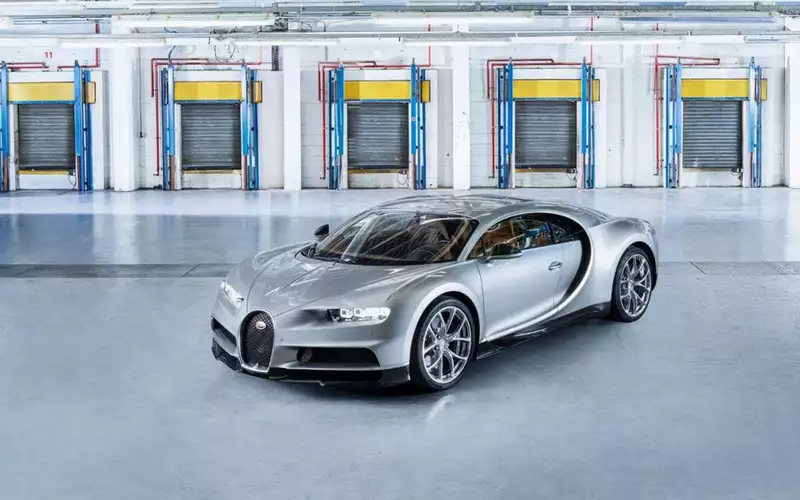
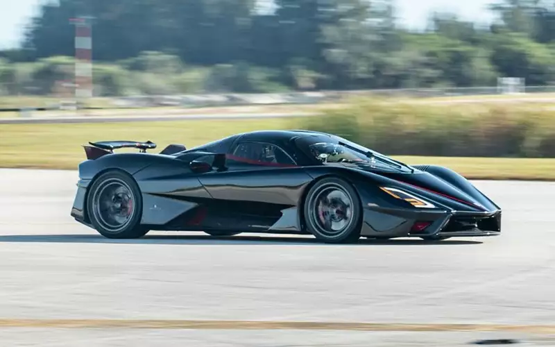

3. Bugatti Chiron — 420 км/ч
Как, только третье место? Да, но Chiron был выпущен в далеком 2016 году. И об этом не стоит забывать
при сравнении. Он до сих пор в тройке самых быстрых. А все благодаря колоссальному 16-цилиндровому
двигателю мощностью 1500 л.с. Кроме того, скорость суперкара просто ограничена
электроникой.

Характеристики
- Год выпуска - 2016
- Мощьность - 1500 л.с.
- Максимальная скорость - 420 км/ч
Узнать больше о Bugatti Chiron
2. Bugatti Chiron Super Sport — 440 км/ч
В 2019 году прототип этого суперкара установил рекорд скорости — 440 км/ч. Но и тут не обошлось без электронных принудительных ограничений. У этого автомобиля особая трансмиссия, которая создана для увеличения максимальной скорости. Всего будет выпущено 30 экземпляровSport, продавать которые будут не дешевле, чем за 3,2 млн евро (196 млн рублей).

Характеристики
- Год выпуска - 2019
- Мощьность - 1500 л.с.
- Максимальная скорость - 440 км/ч
Узнать больше о Bugatti Chiron Super Sport
1. SSC Tuatara — 475 км/ч
SSC Tuatara установила рекорд скорости 533 км/ч, но потом были обнаружены некоторые несоответствия с данными GPS, и заезды пришлось повторить. В ходе подготовки производитель обнаружил ошибки в калибровке устройств. В итоге — только» 475 км/ч. Но на сегодняшний день это самый быстрый серийный суперкар в мире.

Характеристики
- Год выпуска - 2014
- Мощьность - 1774 л.с.
- Максимальная скорость - 420 км/ч
Узнать больше о SSC Tuatara